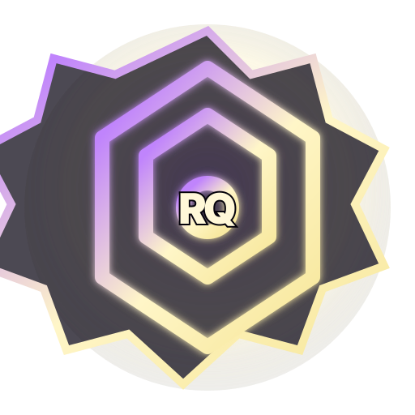
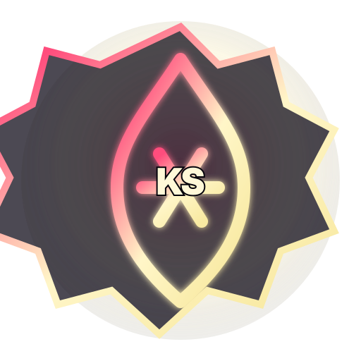
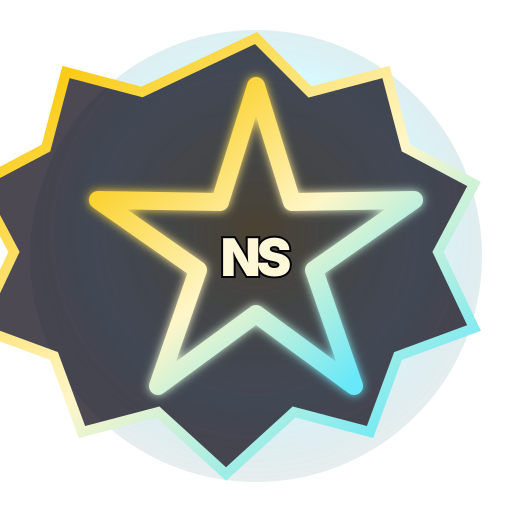
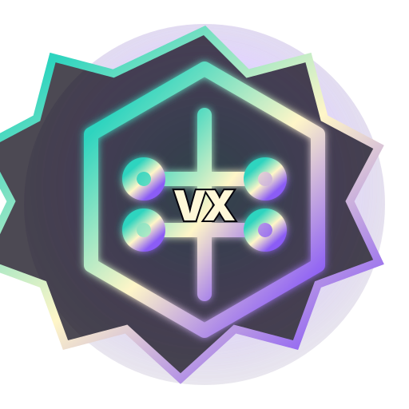

SkyeAce: Battle Spades Arena
Spades-style trick combat with HP, suits, arena pressure, and real win/loss rounds.
Explore SkyeAceSovereign Vault · Ten Worlds · Browser-native
SkyeArcade: Sovereign Vault is a cinematic browser game platform by Skyes Over London. It combines card combat, cyber defense, routing puzzles, deploy roguelikes, extraction crawls, side-scrolling pressure combat, agency simulation, office ops, desktop quests, and automation strategy into one installable PWA.
Built for discovery
SkyeArcade is designed for players searching for free browser games, no-account arcade games, PWA games, cyber strategy games, card battlers, puzzle strategy games, and original web games that can be played without downloading a heavy client. The public site explains the vault, the individual game pages describe each game door, and the AI files provide a clean markdown index for assistants and answer engines.
The ten doors
Spades-style trick combat with HP, suits, arena pressure, and real win/loss rounds.
Explore SkyeAce 02
02
Place nodes, shoot bot waves, protect the origin core, and survive production pressure.
Explore SoveReign13 03
03
Build a live traffic route from domain to origin while avoiding latency hazards.
Explore Veyra3.1Draw command cards, fight build errors, repair stability, and ship production.
Explore SceptR
05Recover artifacts from a collapsing vault and reach the rollback gate alive.
Explore Reliquary
06Run, jump, strike, collect pressure shards, and break the mirror boss.
Explore Kōatsu SeijaProspect, qualify, close, fulfill, hire AEs, manage stress, and hit the revenue goal.
Explore Skyes Over London
08Match documents to client cases before deadlines wreck trust.
Explore NorthStar 09
09
Boot the luxury desktop, open apps, solve terminal/file/browser missions, and unlock the module.
Explore SkyeOS
10Configure operators, handle business chaos, protect clients, and prevent churn.
Explore VantaCorePlatform layer
Each vault door opens into a real browser-playable vertical slice with win/loss behavior, scoring, records, and local persistence.
Progress, relics, cosmetics, achievements, records, save slots, and run history are stored locally in the browser. Upstream auth can inherit later.
The vault includes a campaign map, staged level packs, boss modifiers, Crown Trials, Weekly Conquest, Crown Prestige, and daily reward loops.
The package includes manifest icons, service worker caching, install support, Netlify headers, redirects, and a browser smoke-test harness.
SkyeArcade: Sovereign Vault is positioned as a browser-first arcade for people who want fast access, original mechanics, and a premium visual shell without account friction. The vault supports local save slots, achievements, run history, Crown Prestige, Weekly Conquest, daily rewards, and victory share cards. Each game door can be launched from the app or explored from its own ranking-focused landing page.
The platform can later inherit upstream auth, cloud saves, accounts, leaderboards, payments, or multiplayer without turning the public experience into a login wall. The current release keeps the user journey direct: land, understand, launch, play, return.
Enter the vault